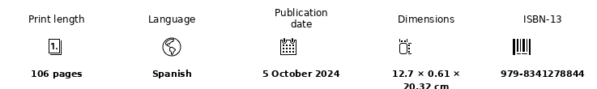

Short-story collection · speculative fiction
Cuentos de la abuela robot
A collection of short stories organized into four territories—Reality, Family, Technology and Myth—in which each story begins with an altered rule and observes what changes from there.
The premises range from digital identity and everyday technology to family ties, myth and the perception of reality. The aim is not to describe complete futures but to introduce a precise anomaly into a recognizable life.
That displacement pushes an ordinary situation toward a moral, emotional or social contradiction. Brevity and irony keep the mechanism visible without turning the story into an explanation of its own idea.
Edition details

Excerpt
«Pedro era un enorme mastín, viejísimo. Apenas podía caminar. Pero, aun así, se levantaba para recibir al invitado. Era un perro guardián: defendía la casa con su afecto. En cuanto el extraño se acercaba, Pedro caminaba un poco patizambo y con enorme dificultad hasta él y le lamía los zapatos, el pantalón, las manos. Se rozaba con él y expresaba una alegría tan pura que el visitante quedaba rendido y ya daba por buena la visita.»